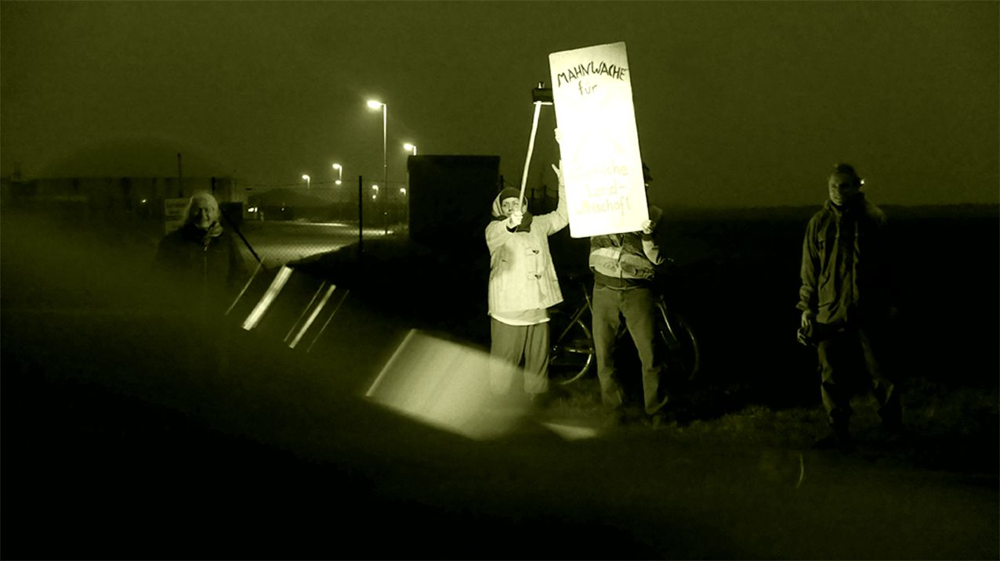
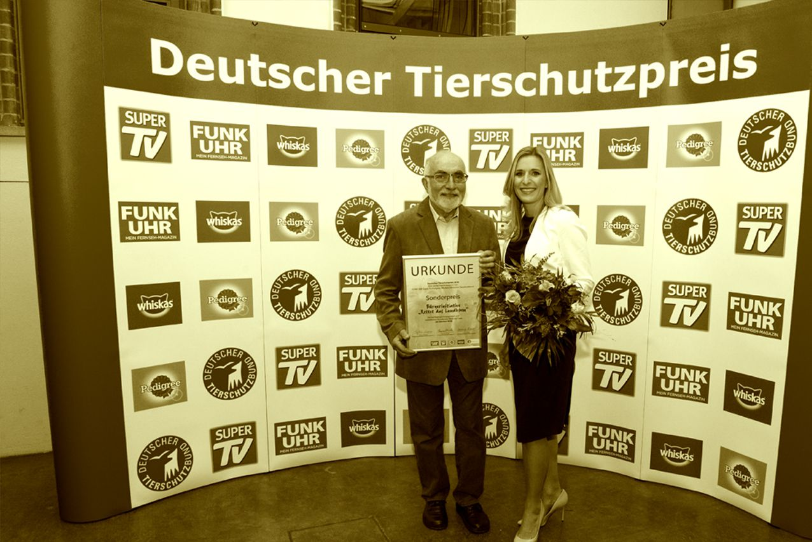

Mahnwache

auch nach dem Ende der Sommerzeit, immer noch jeden Montag Mahnwache vor der hiesigen Ferkelfabrik

„Seit 2011 betreiben Mitglieder der Bürgerinitiative wöchentlich eine Störer-Aktion bzw. Mahnwache vor der Sauenzucht-Anlage von Adrianus Straathof in Alt Tellin...“